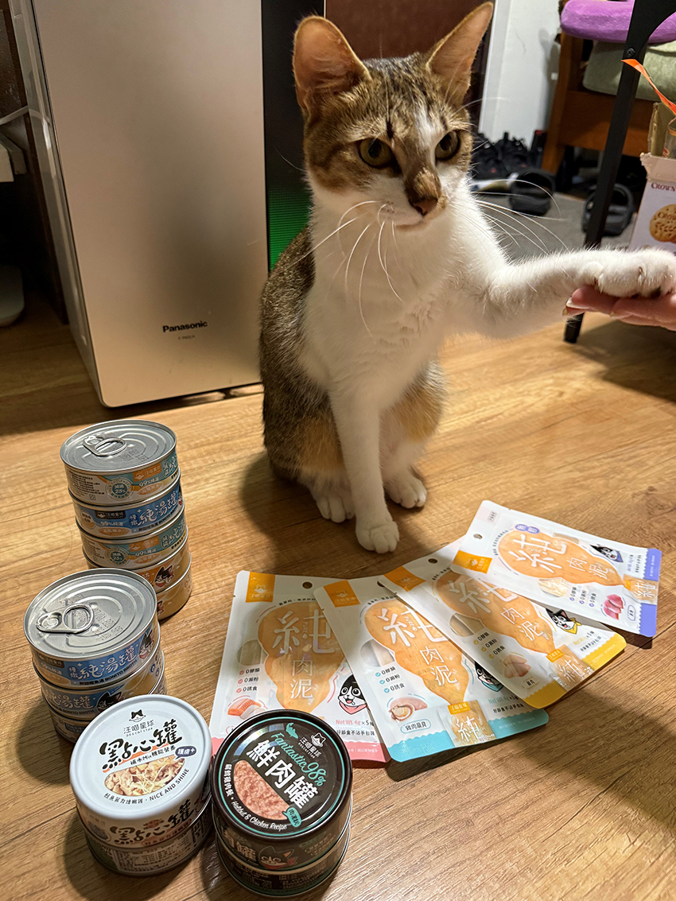
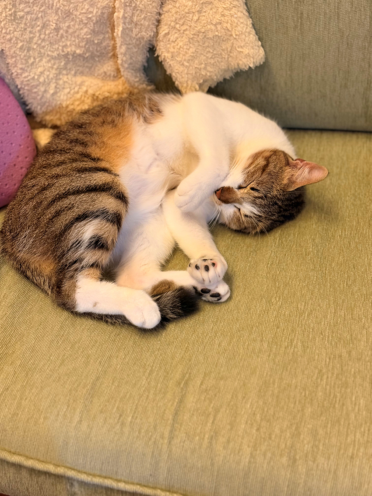

會握手的貓
高嘉靖│營銷策略發展處
茶茶是一隻兩歲大的白底虎斑貓。有天我正準備要整理牠的新罐罐時，牠就主動湊過來，眼神閃亮亮地盯著那些罐頭與肉泥。我半開玩笑地伸出手說：「先握個手再吃喔～」，沒想到牠真的乖乖伸出小爪子，一臉嚴肅地和我握手，彷彿在完成一場正式的交易。那模樣真是又聰明又可愛，我都懷疑牠是不是聽得懂我在說什麼。看到牠面前那一堆戰利品，我忍不住笑出來—這根本是小小貓界貴族在檢查自己的宴會菜單吧！
|  |
|  |
但最有趣的是，沒過多久牠就立刻變身成另一個模樣。吃飽喝足後直接翻肚攤在沙發上，一臉「朕累了」的表情，眼睛半開半閉，還露出一點小牙齒。那副慵懶又滿足的姿態，讓我怎麼看都覺得好笑。明明剛剛還是個有禮貌的貓界新貴，轉眼就變成一坨軟綿綿的毛團。
看著牠從一本正經到徹底放鬆的轉變，我真的覺得有貓陪伴的日子充滿樂趣。每一個小動作、每一個表情，都像在提醒我——幸福其實很簡單，就藏在這些小日常中。